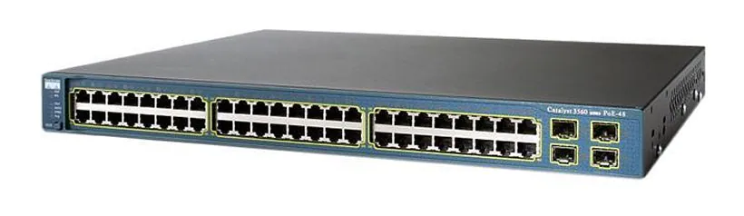
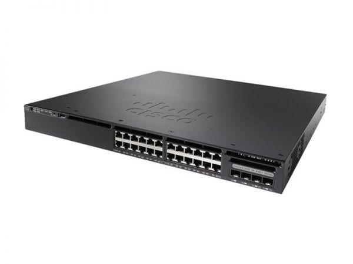
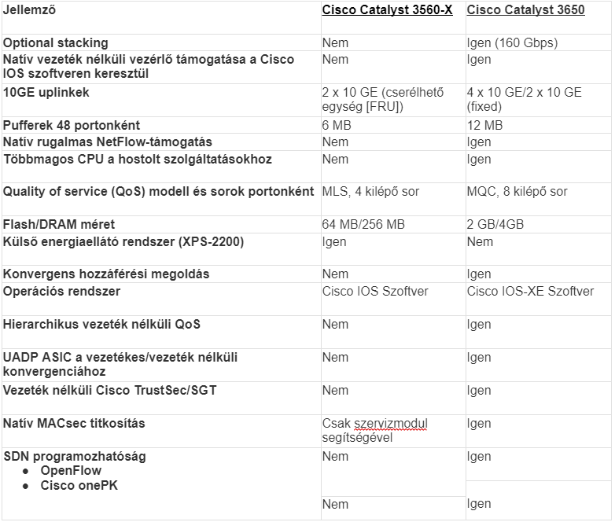

| Cisco 3560 | Cisco 3650 |
|---|---|
|  |  |
| A Catalyst 3560 switch egy olyan Ethernet switch, amelyhez olyan eszközöket csatlakoztathat, mint például munkaállomások, Cisco vezeték nélküli hozzáférési pontok, Cisco IP-telefonok és egyéb hálózatieszközökhöz, például kiszolgálókhoz, útválasztókhoz és más kapcsolókhoz. Ez a fejezet funkcionális áttekintést nyújt az eszközről. | A Cisco Catalyst 3650 sorozat egy önálló és stackelhető hozzáférési kapcsolási platform, amely vezetékes és vezeték nélküli szolgáltatásokat tesz lehetővé egyetlen Cisco IOS XE szoftveralapú platformon. |
| A 24 és 48 portos Catalyst 3560 kapcsolók gerinchálózati kapcsolóként telepíthetők, aggregálhatnak10BASE-T és 100BASE-TX Ethernet forgalmat más hálózati eszközökről. | A Cisco úttörő módon számos gazdag képességet, például a stackelésen alapuló állapotváltáson, a granuláris QoS-t, a biztonságot és a Flexible NetFlow (FNF) szolgáltatást vezetékes és vezeték nélküli hálózatokon zökkenőmentesen biztosítja. |
| A Catalyst 3560-8PC és Catalyst 3560-12PC-S kompakt switch-ek ugyanazt a Power over Ethernet (PoE) csatlakoztathatóságát biztosítják és a hagyományos kábelezési szekrénykörnyezeten kívül is telepíthetők, például irodai munkaterületeken és tantermekben. | A vezetékes és a vezeték nélküli funkciók egyetlen Cisco IOS szoftver image-be vannak csomagolva, ami csökkenti a felhasználók által a hálózatukban történő engedélyezés előtt minősítendő/engedélyezendő szoftver image-ek számát. A parancssori interfész (CLI) kezeléséhez használt egyetlen konzolport csökkenti a vezetékes és a vezeték nélküli szolgáltatások kezeléséhez szükséges érintkezési pontok számát, ezáltal csökkenti a hálózat összetettségét, egyszerűsíti a hálózati üzemeltetést, és csökkenti az infrastruktúra kezelésének TCO-ját. |

A 3650 a jobb mert sokkal gyorsabb, lehet stackelni és azzal 160gbps gyorsaságra képes, több a flash memóriája, képes vezeték nélküli kapcsolatra, több magos cpu van benne.